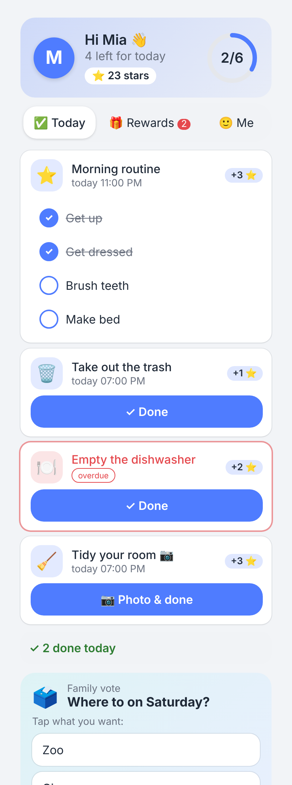
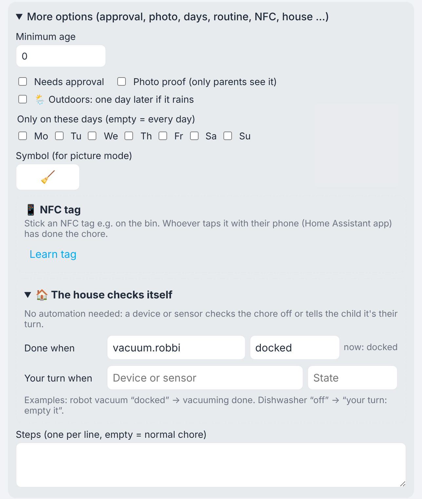
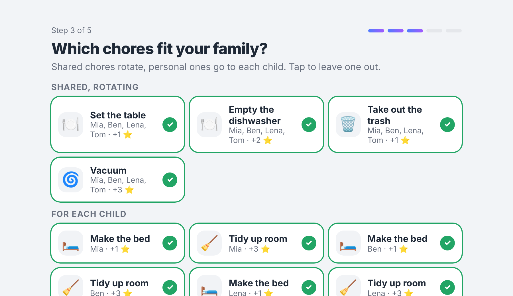
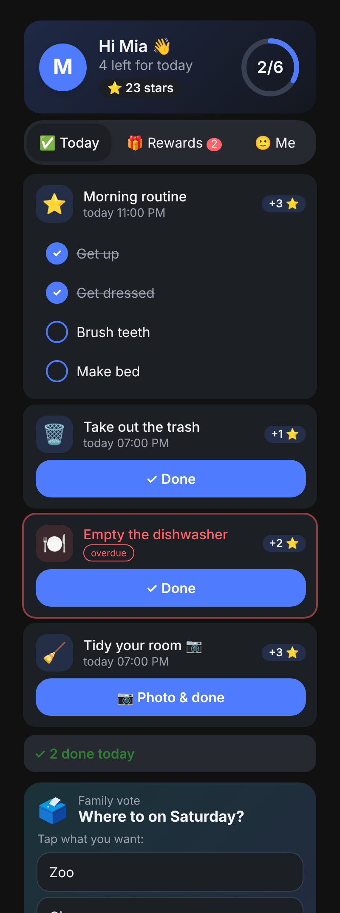
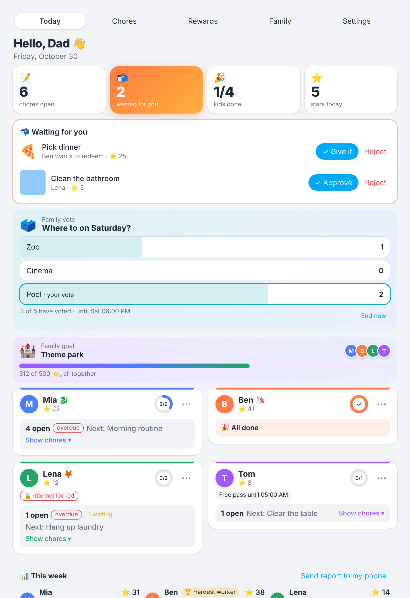
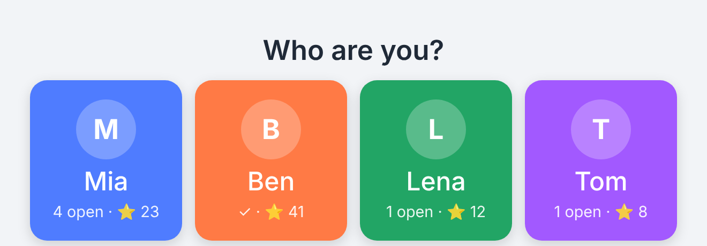
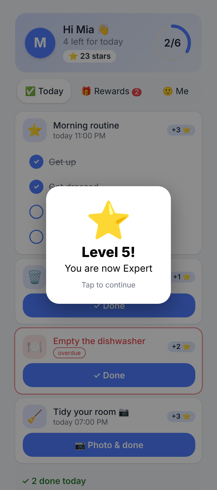

⌂
Home Assistant
The free smart home hub that runs in your home, for example on a Home Assistant Green or a Raspberry Pi. It connects lights, heating, router and speakers and has a phone app.
The family planner for Home Assistant. Kids pitch in, collect stars and grow more independent. You keep track, and the house helps out.
Everything included, everything free. No subscription, no pro version.
Works with Home Assistant only. No separate app, nothing from an app store.

Sternchenplan is not an app you download, it is an add-on for Home Assistant. If you already use Home Assistant, Sternchenplan is ready in a few minutes.
The free smart home hub that runs in your home, for example on a Home Assistant Green or a Raspberry Pi. It connects lights, heating, router and speakers and has a phone app.
Installed in Home Assistant, where it shows up as its own menu item. Kids see their chores in the Home Assistant app, in the browser or on a family tablet. Parents see everything at a glance.
Home Assistant 2025.6 or later and an administrator account. For push notifications, the Home Assistant app on the phones. Everything else, such as speakers or a router integration, is optional.
No Home Assistant yet? It won't work without it. How to get started is explained on home-assistant.io.
A chore chart for the whole family that kids actually like to check.
A wizard asks what you need and suggests chores that fit your children's ages, shared in turns, plus rewards and pocket money if you like. Nothing is required, everything can be changed.
Tick off in the app, on the tablet, with an NFC tag or by voice. Levels, streaks and badges keep it exciting.
Movie night, favourite dinner or pocket money: you decide the rewards. Your child saves up, you approve.
Sternchenplan uses what your Home Assistant can already do. Your chore chart becomes a house that thinks along.
A tag on the bin, hold the phone to it, done. Teach it once and that's it. Works with the regular Home Assistant app.
“I took out the trash.” “What do I still have to do?” “How many stars does Ben have?” With any voice assistant in Home Assistant.
The robot vacuum is back in its dock? Then “Vacuuming” is done. The dishwasher has finished? Then “Your turn: empty it” arrives.
Mowing the lawn in the rain? Outdoor chores move to the next dry day automatically.
The photo of the tidy room arrives as a push. You tap “Approve” without opening the app.
Something still open? Then the console goes offline in the evening, for example via a FRITZ!Box. Once everything is done, it's back online.


This is a small replica of Sternchenplan. You can't break anything.
For real, this runs in the Home Assistant app, in the browser or on a family tablet.
The times are suggestions. Set them the way they suit your family.
A clear kid view. An overview for parents. And a shared tablet for everyone without a phone.




All names in pictures and demo are made up.
No pro version, no locked buttons. Whatever Sternchenplan can do, it does for every family.
Sternchenplan runs entirely in your Home Assistant. No cloud for your family data, no vendor account and no activation.
Photos stay at home. If you like, they are deleted right after you approve.
This website sets no cookies and uses no tracking. It is hosted on GitHub Pages. External push and voice services depend on your Home Assistant setup.
Setup detects your family members automatically. Then a short wizard walks you through the rest.
With HACS: add this GitHub address under “Custom repositories” as type “Integration”.
sternchenplan folder to config/custom_components/, for example with the File editor or Samba.Sternchenplan is a family project and stays free. If it makes your everyday life easier, I'd be happy about a small tip. Recommending it or reporting bugs helps just as much.
Here are the answers for getting started.
Yes. All features are free, with no trial and no subscription. If you like, you can leave a voluntary tip.
No. Sternchenplan is an add-on for Home Assistant and only runs there. On the phone you use the free Home Assistant app, where Sternchenplan shows up as its own menu item.
No, Sternchenplan doesn't work without Home Assistant. Home Assistant itself is free and runs on a small computer at home. How to get started is explained on home-assistant.io.
Yes. Sternchenplan follows the language of your Home Assistant user, in German or English. The voice commands also work in both languages.
Not for everyday use, only for the download. Push notifications and some speakers may use external services depending on your setup.
Writable NFC tags (NTAG213 or similar, a few cents each) and a phone with NFC and the Home Assistant app. In Sternchenplan, tap “Learn tag” on the chore and hold the phone to it.
What matters is that Home Assistant has a switch for the device's internet access, for example through the FRITZ!Box integration. You pick the devices yourself. Best leave phones out so your child stays reachable.
The lock only controls the selected devices. A mobile hotspot or a device you didn't add can get around it. It supports your family agreements, it is not a complete parental control.
The guide covers everything from installation to the last setting, each with the way to get there.
In the forum. Anyone can read it; to write you need a free GitHub account.
On GitHub under Issues. You need a free GitHub account.
You use Home Assistant and are trying Sternchenplan? Tell me how old your kids are, what works well and what's missing.